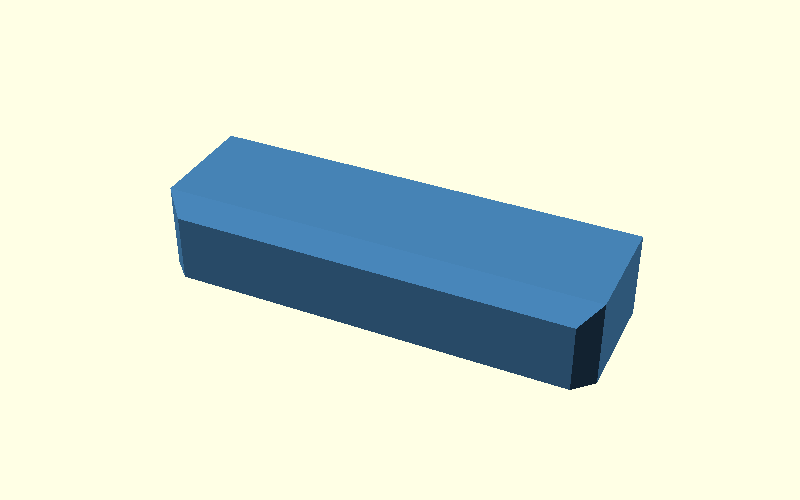
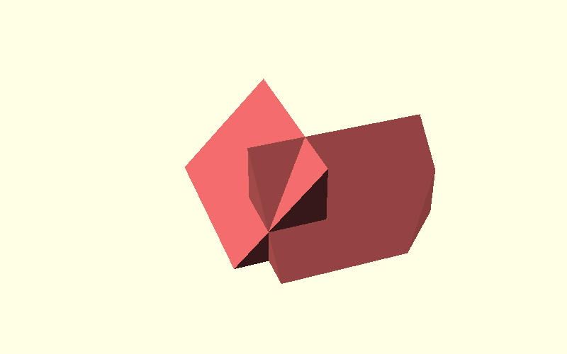
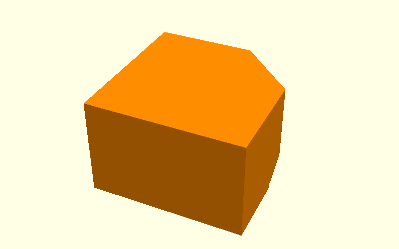

Beam demo: where ef meets the chamfered side
This example is a single straight arm of the Corner Bracket.
The point is not merely to show two different bevel sizes. The actual problem
is the small corner where the elephant-foot relief ef reaches an already
chamfered side edge cs.
The beam removes the L shape, holes, nuts and inside radius so that this one junction is visible.
0. Start with a plain beam

The beam has square side faces and a sharp bottom contact edge.
1. Apply the normal side chamfer cs

The same idea as the real bracket is used here:
- the broad printed side faces are chamfered around their outside edges;
- the bottom contact edge itself is deliberately not part of that outer chamfer operation.
At the beam end this creates a diagonal cs bevel that runs down to the
bottom contact plane.
That lower end corner is the location we care about.
2. Add the broad elephant-foot relief ef
The elephant-foot operation now runs along the long bottom contact edge.
Most of that edge is straightforward. The difficult part is the endpoint,
because the ef relief reaches the diagonal cs side bevel there.
The image below is deliberately cropped to that one junction.

This is the problem the extra correction is intended to solve: the broad bottom-edge relief does not naturally finish as the desired continuous miter against the diagonal side bevel.
3. Add a small local miter hull
Instead of changing the whole beam or replacing the broad ef hull, a small
additional triangular cutting profile is swept along the diagonal junction.

This is a local correction only. It exists because two otherwise sensible operations meet at an awkward 3D corner:
cs: diagonal side-face bevel;ef: bottom contact-edge relief.
4. The corrected junction

The same cropped corner now shows the relief continuing through the meeting point rather than ending with the unwanted flat termination.
5. Final beam

The full beam is shown again only after the local issue is understood.
The direct mapping back to the Corner Bracket is:
straight beam end ↔ arm tip
bottom contact edge ↔ plywood-facing contact edge
diagonal cs bevel ↔ side-edge bevel at the arm tip
small miter hull ↔ relief_corner_miters()
Source
The complete demonstration is in
scad/hull_operations.scad.
The scenes are:
00_plain01_cs02_problem03_miter04_fixed05_final